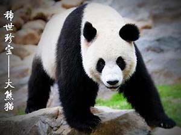
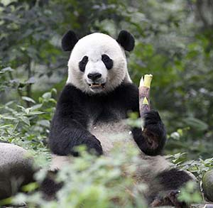

大熊猫体色黑白，体形肥硕似熊，头部和躯干长1.2~1.8米，尾长10~12厘米，体重80~120千克，最重可达180千克，一般雄性个体稍大于雌性。大熊猫的耳朵为圆形，一双黑溜溜的眼睛周围长着“黑眼圈”,就像戴着一副墨镜一样，十分惹人喜爱。
在几百万年以前，大熊猫属于肉食动物，但是现在却是素食主义者，喜食60余种竹子，最喜鲜竹，偶尔也会开开荤。

作为"国宝"的大熊猫，深受大家的喜爱。其中也有很多大熊猫有着属于自己的名字和故事。点击更多了解